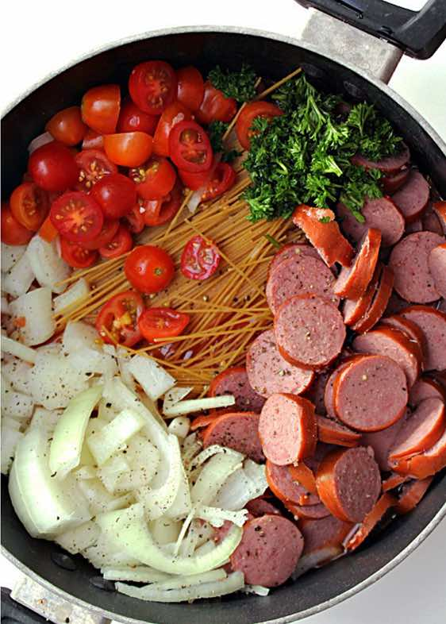

One Pot Creamy Spaghetti and Sausage Recipe
Main DishNoodle
Servings6
PrepPT10M
CookPT14M

Ingredients
- 24 ounces pasta sauce (divided)
- 7.5 ounces chicken broth
- 8 ounces spaghetti noodles
- 8 ounces Italian turkey sausage (pre-cooked, and sliced)
- ½ cup cherry tomatoes (halved)
- ½ sweet onion (chopped)
- ¼ teaspoon garlic powder
- ¼ teaspoon salt
- ¼ teaspoon pepper
- ¼ teaspoon Italian Seasoning
- ½ cup water
- ¼ cup sour cream
- ¼ cup shredded mozzarella cheese
Directions
- Pour 1/2 jar of pasta sauce and chicken broth into the bottom of a large (12 inch) braising pan or Dutch oven pan.
- Break spaghetti noodles in half and toss with sauce and broth.
- Add sliced sausage, tomatoes, onion, garlic powder, salt, pepper, and Italian seasoning.
- Pour other jar of spaghetti sauce and 1 cup of water into the pan and turn heat on high. Once it starts to boil, turn heat down to medium heat and let cook for 9-10 minutes (or until the noodles are al dente), stirring every couple of minutes so that the noodles don't stick together and it is evenly cooked.
- Turn heat down to low and stir in sour cream and mozzarella cheese.
- Let it cook over the low heat for 2-3 minutes, or until the cheese is completely melted.
- Scoop into individual servings.
Source
https://www.sixsistersstuff.com/recipe/one-pot-creamy-spaghetti-and-sausage/
This page includes Schema.org Recipe structured data for recipe importers.